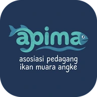

Uji Coba Publik · UI/UX
Beri masukan untuk APIMA
Aplikasi retribusi digital Pasar Ikan Muara Angke. Kritik jujur Anda soal tampilan, alur, dan kenyamanan pakai sangat membantu kami menyempurnakan produk ini.

Terima kasih atas masukannya
Masukan UI/UX Anda sudah kami terima dan akan langsung dipakai untuk menyempurnakan aplikasi APIMA.